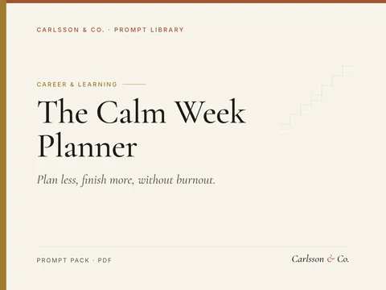
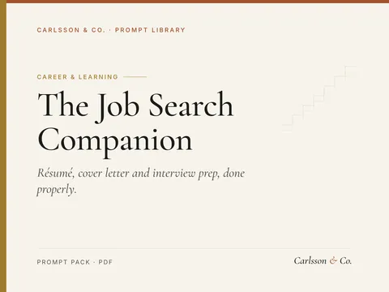
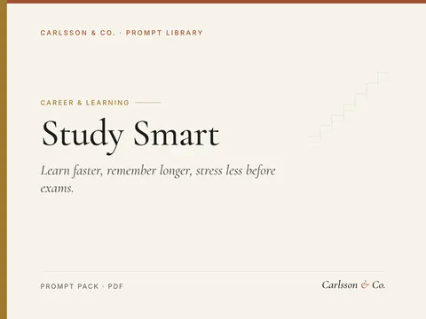
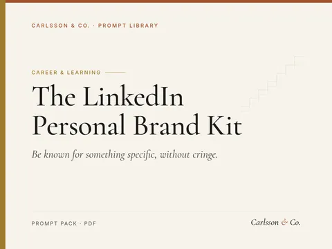
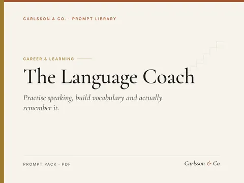
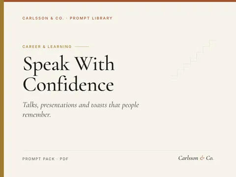
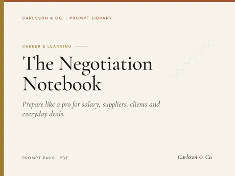
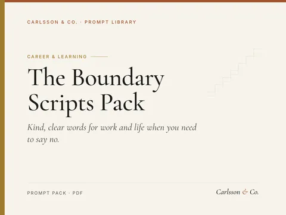
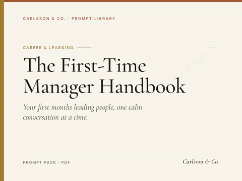
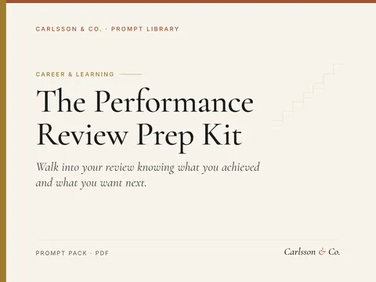

Plan less, finish more, without burnout.
16 prompts for weekly planning, prioritisation, daily focus and honest reviews.
Sample prompt
Here is everything on my mind: [paste messy list]. Sort it into: do this week, schedule later, delegate, drop.…

Résumé, cover letter and interview prep, done properly.
18 prompts covering the whole job search: tailoring your résumé to a posting, cover letters, LinkedIn, networking messages, interview practice and salary negotiation.
Sample prompt
Analyse this job posting: [paste]. List the must-have skills, nice-to-haves, keywords, and what problem this hire…

Learn faster, remember longer, stress less before exams.
16 prompts for students in school, university or self-study: study plans, active recall, flashcards, essay outlines, exam revision and focus routines.
Sample prompt
I'm taking [courses] with exams on [dates]. I can study [hours] per week. Build a week-by-week plan that…

Be known for something specific, without cringe.
17 prompts for building a personal brand on LinkedIn: positioning, profile rewrite, content pillars, post formats, comments, DMs and a weekly routine.
Sample prompt
Help me define my positioning: I help [audience] with [problem] using [experience]. Ask me 5 questions, then write…

Practise speaking, build vocabulary and actually remember it.
15 prompts for language learners: conversation practice, role-plays, vocabulary building, grammar explanations, writing correction, listening practice and study routines, for any language and level.
Sample prompt
Be my [language] conversation partner at [level]. Talk about [topic], use simple sentences, ask me one question at…

Talks, presentations and toasts that people remember.
15 prompts for public speaking: finding your message, structuring talks, openings and closings, stories, slides, rehearsal, Q&A prep, nerves and feedback.
Sample prompt
Help me find the one-sentence message of my talk on [topic] for [audience]. Ask me 5 questions, then propose 3…

Prepare like a pro for salary, suppliers, clients and everyday deals.
15 prompts for negotiation preparation: goals and walk-away points, understanding the other side, anchoring, scripts, role-play, handling tactics, and follow-up emails.
Sample prompt
Help me prepare for negotiating [what] with [who]. Define my goal, ideal outcome, acceptable range, walk-away…

Kind, clear words for work and life when you need to say no.
14 prompts for setting boundaries at work and in life: declining requests, protecting focus time, ending conversations, negotiating workload, and following up calmly.
Sample prompt
Write 5 polite ways to decline [request] from [colleague/manager/client] while offering [alternative: later date,…

Your first months leading people, one calm conversation at a time.
14 prompts for new managers and team leads: a first 90-day plan, one-to-ones, clear expectations, delegation, feedback, difficult conversations, team meetings and looking after yourself in the role.
Sample prompt
I have just become manager of a team of [number] [roles] at [type of organisation]. Draft a 30-60-90 day plan…

Walk into your review knowing what you achieved and what you want next.
12 prompts for preparing your own yearly or mid-year performance review: gathering evidence of your work, keeping a running wins log, turning tasks into outcomes, writing self-assessment answers, handling a missed goal honestly, asking colleagues for feedback, preparing for the conversation, responding calmly to criticism, setting next year's goals, raising development, promotion or pay, and writing a follow-up email.
Sample prompt
Help me rebuild my year at work as a [job title] from [start month] to [end month]. Give me a checklist of places…